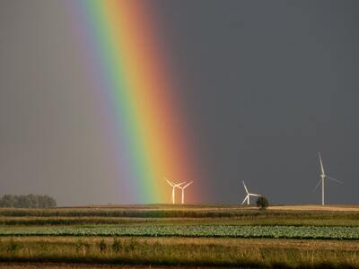

Soda Springs, Idaho
Weather Summary
Currently:
High:
Wind Chill:
Humidity:
Wind Speed:
5 Day Forecast
Upcoming Events
History of Soda Springs
Soda Springs has a rich history starting when the Pioneers headed west for California and Oregon.
Due to the abundance of springs and water in the area, Soda Springs became known as the "Oregon Trail Oasis."
The famous Steam Boat Springs and Hooper Springs, which was originally called "Beer Springs,"
were some of the main sites to be seen by the earlier settlers and travelers as well as the many sulfurous springs that many pioneers journaled about the smell coming from the them.
The City later became further famous in 1937 when a well was being drilled in search of hot water for a bath house that unleashed what is known as the Geyser,
which is the only captive Geyser in the world.
Caribou Historical Society promoted the community’s history and help celebrate the Caribou County Centennial 1919-2019 please call Galen Wilson 208-547-2367 or Craig Shuler 208-547-3047 for more information

Forecast Now
9999 NE 88th St
Bothell, WA, 98011
425-999-9999
contact@forecastnow.us